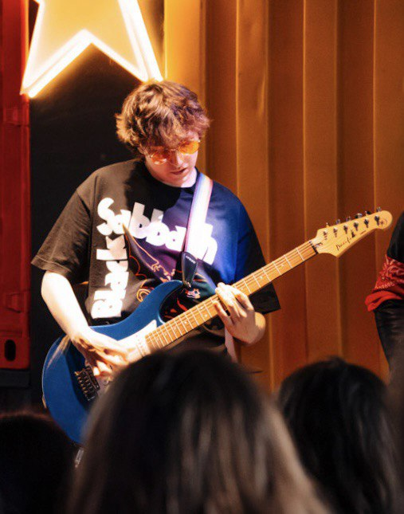

Welcome to my Home
Hello, I’m Danil from Kazakhstan! With over five years of guitar playing experience, my passion for music drives me to explore diverse styles and gear. This blog is dedicated to sharing my journey, offering insights into various guitar techniques, gear reviews, and personal experiences. Whether you're just starting or are a seasoned player, you'll find tips and recommendations tailored to enhance your skills and enjoyment. Join me in discovering the rich world of guitars and making music!
